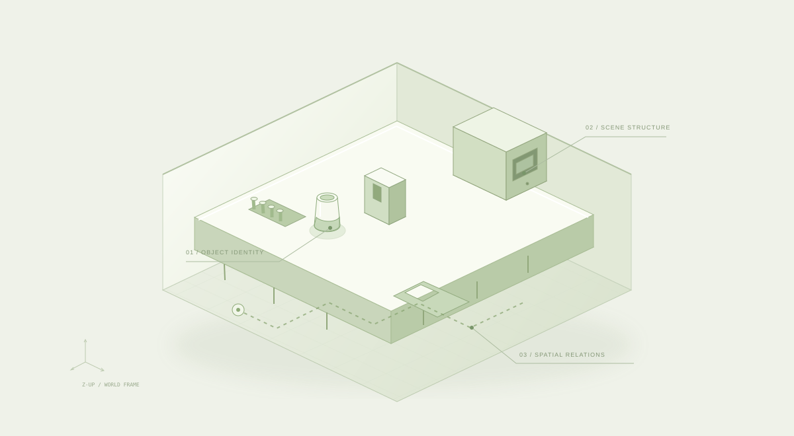

RGB
Observe
Calibrate the camera, sample RGB frames, and recover geometry from multiple viewpoints.
Images → observed mapA world agents can understand.
From visual observations to structured scenes and spatial memory.
Exploring the foundations of grounded action in the physical world.
Bringing intelligence to the bench.
An image captures a moment. An embodied agent needs more: the structure of a room, the identity of an object, and the evidence behind a remembered location. BioAgent-world brings these questions together.
Our BioagentNav pipeline turns offline RGB observations into auditable maps, structured Real2Sim scenes, independent object assets, and spatial memory—laying the groundwork for future navigation and interaction.
A closer look at the real-world demonstration and the scene representations we are working toward.
The complete supplied recording of a robot operating at a laboratory workspace. Presented as a BioAgent demonstration, independently of the offline BioagentNav pipeline.

ILLUSTRATIVE PLACEHOLDERSeparate observed geometry, reconstructed structure, and individual objects. This illustration reserves a place for project renders and reconstruction comparisons.
Interactive schema illustration. These example records are not experimental measurements.
Explore how an object record can connect identity, location, relationships, and visual evidence. Select an object above to inspect the example.
A traceable path from what a camera sees to what an agent can reason about.
Calibrate the camera, sample RGB frames, and recover geometry from multiple viewpoints.
Images → observed mapBuild structured scenes and independent assets, with explicit separation between evidence and completion.
Geometry → structured sceneLink objects, locations, timestamps, and evidence to support queries and offline skill proposals.
Scene → spatial memoryKeep what was observed distinct from what was inferred.
A CORE DESIGN PRINCIPLEStructured outputs, explicit provenance, and a clear boundary between an offline proposal and a physical action.
Object identity, position, observations, and time are stored together. Generated completion and physical assumptions remain distinguishable from measured observations.
The pipeline supports point clouds, structured geometry, independent object assets, and exports including GLB, BLEND, USD, JSON, and SQLite. Visual appearance, geometry, and physical validity need separate checks.
BioagentNav currently focuses on offline RGB reconstruction, scene verification, spatial memory, and skill proposals. Robot integration and full-room navigation validation are future work. See the source repository for the latest implementation status.
Follow the work as we connect perception, world representations, and embodied intelligence.
Explore on GitHub↗